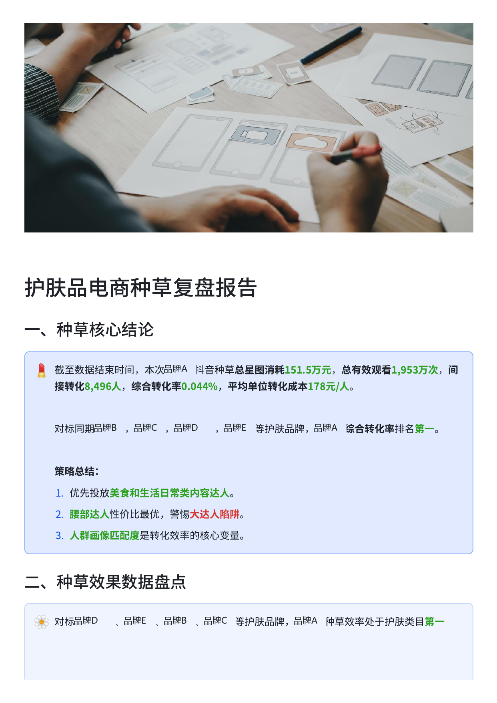

真实报告 · 24页护肤品电商达人种草效益复盘
对多品牌达人投放数据进行效率复盘，自定义“千元转化人数”指标，下钻达人、内容方向与人群匹配，形成筛选和预算建议。
151.5万品牌A总星图消耗
8,496间接转化人数
2.9×异常达人单位成本 / 均值
0.056%美食内容综合转化率
- 某 673 万粉达人单位转化成本为均值的 2.9 倍，提示粉丝规模不能替代效率判断。
- 美食内容综合转化率为 0.056%，进一步结合内容场景与人群匹配提出投放建议。
个人实践项目 · 数据集由课程提供 · 分析与报告本人完成
查看完整分析报告 PDF ↗